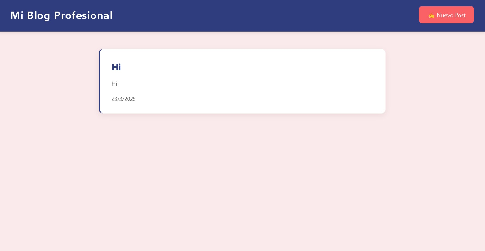

Blog Full Stack
Mi Blog Profesional es una plataforma web desarrollada con React para la gestión y publicación de artículos. Utiliza Firebase como backend para el almacenamiento de datos, permitiendo a los usuarios crear, visualizar publicaciones de manera eficiente. La aplicación está diseñada con una interfaz intuitiva y responsiva, garantizando una experiencia óptima en diferentes dispositivos, desplegada en Vercel.